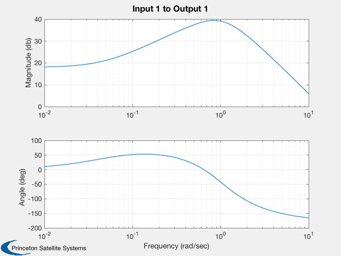
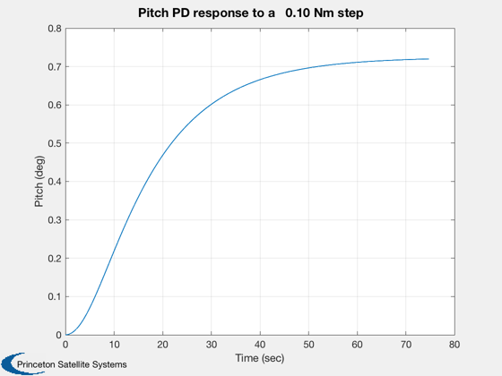

Design a PD controller for pitch for the ComStar satellite.
If requested saves the matrices to a file PD.txt in the ComStar folder.
------------------------------------------------------------------------- See also PDDesign, C2DelZOH, C2DZOH, Series, AC, ComStar, FResp, Plot2D, WriteCM -------------------------------------------------------------------------
Contents
%-------------------------------------------------------------------------- % Copyright 1996 Princeton Satellite Systems, Inc. All rights reserved. %-------------------------------------------------------------------------- % Since version 2. %--------------------------------------------------------------------------
Constants
%----------
degToRad = pi/180;
radToDeg = 180/pi;
System Parameters
%------------------ inr = ComStar('MO Inertia'); cMatrices = 'yes'; dT = 0.25; % This is the loop sampling time
Design the pitch loops
%----------------------- zeta = 1.0; % This must be higher than 0.7071 because of the noise filter lag wN = 0.1; wD = 1.0; [aC,bC,cC,dC] = PDDesign(zeta,wN,wD,inr(2,2));
If requested save and dump the controller matrices
%--------------------------------------------------- if( strcmp(cMatrices,'yes') ) fPath = fileparts(which(mfilename)); fID = fopen(fullfile(fPath,'PD.txt'),'w'); [aD,bD] = C2DelZOH(aC,bC,dT); cD = cC; dD = dC; WriteCM(fID,'A Matrix','fPLAMatrix',reshape(aD',1,length(aD)^2),12,20,3) WriteCM(fID,'B Matrix','fPLBMatrix',bD,12,20,3) WriteCM(fID,'C Matrix','fPLCMatrix',cD,12,20,3) WriteCM(fID,'D Matrix','fRPLDMatrix',dD,12,20,3) fclose(fID); disp('Pitch Loop PD Matrices') disp(aD); disp(bD); disp(cD); disp(dD); end
Pitch Loop PD Matrices
-0.25918
0.25918
-191.45
199.36
Append the ESA Noise filter
%---------------------------- sN = load('NoiseF'); [aC,bC,cC,dC] = Series(aC,bC,cC,dC,sN.aN,sN.bN,sN.cN,sN.dN); w = logspace(-2,1,400); FResp(aC,bC,cC,dC,1,1,w,'unwrap');
Look at the closed loop eigenvalues
%------------------------------------
aP = [0,1;0 0];
bP = [0;1]/inr(2,2);
cP = [1,0];
dP = 0;
[a,b,c,d] = Series(aP,bP,cP,dP,aC,bC,cC,dC);
aCL = a - b*c;
disp(eig(aCL));
-0.88768 + 0.4804i
-0.88768 - 0.4804i
-0.50017 + 0i
-0.26449 + 0i
-0.074199 + 0i
Simulate the loop
%------------------ nSim = 300; yPlot = zeros(1,nSim); uStep = 0.1; n = length(aCL); x = zeros(n,1); % Rest conditions at the start c = [1 zeros(1,n-1)]; [aCL, b] = C2DZOH( aCL, b, dT ); for k = 1:nSim yPlot(k) = c*x; x = aCL*x + b*uStep; end titleStr = sprintf('Pitch PD response to a %6.2f Nm step',uStep); Plot2D((0:(nSim-1))*dT,yPlot*radToDeg,'Time (sec)','Pitch (deg)',titleStr); %--------------------------------------